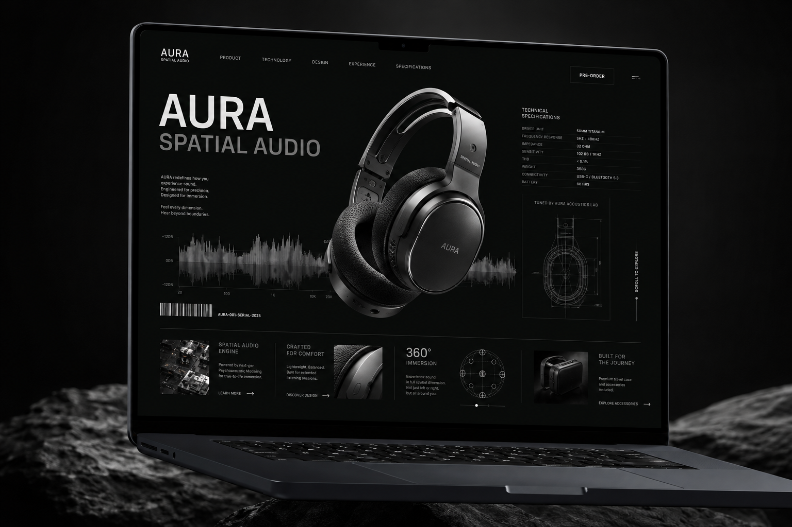

HARDWARE & SPATIAL AUDIO BRANDING
AURA SPATIAL AUDIO
微工業機能美學（Micro-Industrial）：將聲學濾波器與微晶片轉化為品牌核心視覺資產，拒絕同質化科技極簡。
預購轉換率 (CR)
+34.8%
平均停留時長
3m 42s
WEBGL 幀率
60 FPS
業界殊榮
Awwwards SOTD
// THE ASSET DESK / PHYSICAL ARTIFACTS

Titanium Acoustic Core 爆炸拆解圖
[SCHEMATIC_01]
40mm 鈹振膜動圈單元與超低延遲空間計算 PCB 板結構標註，將內部精密工程轉化為外部視覺賣點。

先鋒深色官網 UI 系統
[WEB_SYS]
磨砂玻璃面板結合即時聲學頻率響應圖，打造極致沉浸的發燒友選購介面。
再生未塗布紙盒包裝
[PRINT_CRAFT]
實體灰色紙漿觸感搭配電光青微工業工程標籤，建立難以被 AI 複製的物理開箱溫度。
01. 市場挑戰 (The Challenge)
市面上的耳機品牌充斥著同質化的極簡蘋果風，消費者難以區分產品本質差異。AURA 主打專業級空間聲學晶片，需要一套能讓專業音樂製作人與發燒友信服的硬核視覺語言。
02. 策略切入點 (Strategy)
我們反其道而行，捨棄「將科技隱藏」的慣例，將微晶片、濾波器與聲學測試曲線解構，直接融入 Logo、包裝與網頁動效中，塑造出「工程即美學」的高端專業定位。
03. 商業成果 (Impact & ROI)
上線首週預購轉換率提升 34.8%，平均停留時長達到 3 分 42 秒，成功獲得 2026 Awwwards Site of the Day 提名。